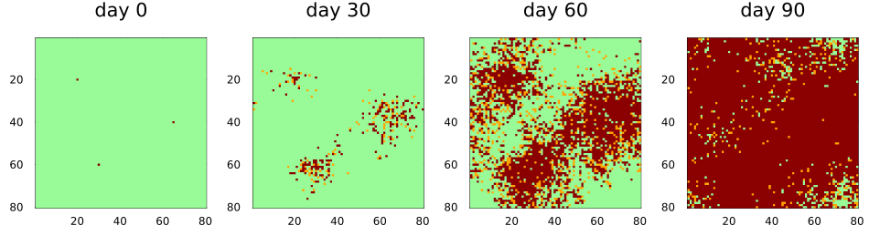
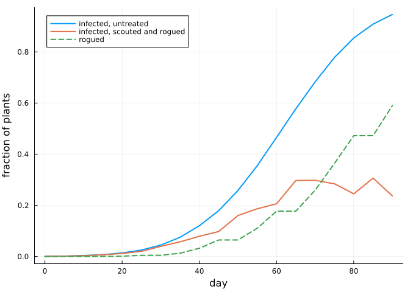
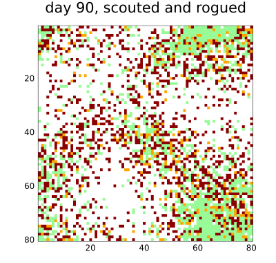

Hybrid models with Ark.jl
Simon Frost
Overview
Ark.jl is an entity component system (ECS): a World holds entities, each entity is a set of components (plain immutable structs), and the model’s behaviour is written as functions (“systems”) that loop over queries such as “every entity with an Aphid component”. ArkBackend keeps the state of a cellular automaton in such a world, so that mobile agents written as entities can share it.
This vignette writes the aphid-borne virus of the previous vignette in ECS style, then uses the one-entity-per-cell mode to let a scouting system tag diseased plants with a component and rogue them later. It ends by comparing the cost of the agent backends.
ENV["GKSwstype"] = "100"
using CellularAutomataCore
using Ark
using Plots
using Random
using StatisticsThe crop
The crop is the same cellular automaton as before: healthy (0), latent (1) and symptomatic (2) plants, with slow spread by root contact.
crop = LocalRule(VonNeumann(1)) do cell, nbrs, ctx
if cell == 0
k = count(==(2), nbrs)
return bernoulli(ctx, 1 - (1 - ctx.p.ε)^k, 1) ? Int8(1) : Int8(0)
elseif cell == 1
return bernoulli(ctx, 1 / ctx.p.τ, 2) ? Int8(2) : Int8(1)
end
return cell
end
n = 80
u0 = zeros(Int8, n, n)
for (i, j) in ((20, 20), (60, 30), (40, 65))
u0[i, j] = 2
end
p = (ε=0.02, τ=5, inoculation=0.4, acquisition=0.6, loss=0.1, flight=3,
emigration=0.03, immigrants=40)
prob = CAProblem(crop, u0, 90, p; seed=1)CAProblem(LocalRule(<anonymous function>, VonNeumann(1)) on Torus((80, 80)), tspan=(0, 90))Aphids as entities
An aphid is an entity with one component, holding its position and whether it carries the virus. Components are immutable, so a system that changes an aphid writes a new component in its place.
struct Aphid
pos::NTuple{2,Int}
viruliferous::Bool
endThe behaviour is three systems. A flight lands on one of the cells exactly flight cells away (in the maximum norm), as Agents.jl’s randomwalk! does on a grid, so this is the model of the previous vignette. The world holds a Xoshiro random number generator as a resource, seeded from the problem’s seed, and the systems reach the crop through read_cell(world, pos) and write_cell!(world, pos, value). Entities cannot be removed while a query over them is running, so emigrants are collected first and removed afterwards.
function arrive!(world, k)
rng = get_resource(world, Xoshiro)
for _ in 1:k
new_entity!(world, (Aphid((rand(rng, 1:n), rand(rng, 1:n)), false),))
end
end
function emigrate!(world, p)
rng = get_resource(world, Xoshiro)
leaving = Entity[]
for (es, aphids) in Query(world, (Aphid,))
for i in eachindex(es)
rand(rng) < p.emigration && push!(leaving, es[i])
end
end
foreach(e -> remove_entity!(world, e), leaving)
end
function fly_and_probe!(world, p)
rng = get_resource(world, Xoshiro)
f = p.flight
ring = [(dx, dy) for dx in -f:f for dy in -f:f if max(abs(dx), abs(dy)) == f]
for (es, aphids) in Query(world, (Aphid,))
for i in eachindex(es)
a = aphids[i]
pos = mod1.(a.pos .+ rand(rng, ring), (n, n))
plant = read_cell(world, pos)
if a.viruliferous && plant == 0 && rand(rng) < p.inoculation
write_cell!(world, pos, 1)
end
carries = plant == 2 && rand(rng) < p.acquisition ? true :
rand(rng) < p.loss ? false : a.viruliferous
aphids[i] = Aphid(pos, carries)
end
end
end
function aphids!(world, p, t)
emigrate!(world, p)
fly_and_probe!(world, p)
arrive!(world, p.immigrants)
endaphids! (generic function with 1 method)ArkBackend takes the component types of the mobile agents (the world must know them when it is created), an init!(world, p) that creates the first aphids, and an update!(world, p, t) that runs after each sweep of the crop with the new time.
backend = ArkBackend(:grid; components=(Aphid,), init! =(w, p) -> arrive!(w, 1500),
update! =aphids!)
sol = solve(prob; backend, saveat=30)
plot([plot(sol; snapshot=i, c=[:palegreen, :orange, :darkred], clims=(0, 2),
colorbar=false, title="day $(sol.t[i])") for i in eachindex(sol.t)]...;
layout=(1, 4), size=(950, 270))
This is the same model as the Agents.jl version, but the two draw their random numbers in a different order (here all emigrants are chosen before any aphid flies), so they agree in distribution, not run by run. The fraction of plants infected at day 60, over 40 runs, can be compared with the untreated histogram of the previous vignette:
day60 = EnsembleProblem(remake(prob; tspan=(0, 60));
output_func=(s, ctx) -> (count(>(0), final_state(s)) / n^2, false))
runs = solve(day60, Synchronous(), EnsembleThreads(); trajectories=40, backend,
save_everystep=false)
(mean=mean(runs.u), sd=std(runs.u))(mean = 0.320546875, sd = 0.07415514734260763)agent_model(integ) returns the world, for callbacks or for inspection.
integ = init(prob; backend)
step!(integ, 30)
world = agent_model(integ)
carriers = count(a -> a.viruliferous,
(a for (es, aphids) in Query(world, (Aphid,)) for a in aphids))
(aphids=count_entities(Query(world, (Aphid,))), carriers=carriers)(aphids = 1394, carriers = 80)One entity per plant
With ArkBackend(:cells) every plant is an entity with a CACell component, which holds the plant’s linear index and state. The run is the same as with the grid:
cellular = ArkBackend(:cells; components=(Aphid,), init! =(w, p) -> arrive!(w, 1500),
update! =aphids!)
solve(prob; backend=cellular, saveat=30).u == sol.utrueBecause plants are entities, systems can query them like any other entity and give them components of their own. Here a scout walks the field once a week, finds each symptomatic plant with probability one half and tags it with a Flagged component recording the day. Three days later a crew rogues every flagged plant, which becomes an empty cell (3) that neither infects nor can be infected. The rogue system writes the new state straight into the plant’s CACell component, and the next sweep of the crop reads it from there. Components are added outside the query, as entities cannot change while one runs.
struct Flagged
day::Int
end
function scout!(world, t)
t % 7 == 0 || return
rng = get_resource(world, Xoshiro)
found = Entity[]
for (es, plants) in Query(world, (CACell{Int8},); without=(Flagged,))
for i in eachindex(es)
plants[i].state == 2 && rand(rng) < 0.5 && push!(found, es[i])
end
end
foreach(e -> add_components!(world, e, (Flagged(t),)), found)
end
function rogue!(world, t)
for (es, plants, flags) in Query(world, (CACell{Int8}, Flagged))
for i in eachindex(es)
t - flags[i].day >= 3 && (plants[i] = CACell(plants[i].index, Int8(3)))
end
end
end
managed = ArkBackend(:cells; components=(Aphid, Flagged),
init! =(w, p) -> arrive!(w, 1500),
update! =(w, p, t) -> (aphids!(w, p, t); scout!(w, t); rogue!(w, t)))
rogued = solve(prob; backend=managed, saveat=5)CASolution with 19 saved states at t = 0:…:90, retcode Success (LocalRule(<anonymous function>, VonNeumann(1)))untreated = solve(prob; backend, saveat=5)
infected(s) = [count(∈((1, 2)), u) / n^2 for u in s.u]
removed(s) = [count(==(3), u) / n^2 for u in s.u]
plot(untreated.t, infected(untreated); label="infected, untreated", lw=2,
xlabel="day", ylabel="fraction of plants", legend=:topleft)
plot!(rogued.t, infected(rogued); label="infected, scouted and rogued", lw=2)
plot!(rogued.t, removed(rogued); label="rogued", lw=2, ls=:dash)
plot(rogued; snapshot=length(rogued.t), c=[:palegreen, :orange, :darkred, :white],
clims=(0, 3), colorbar=false, title="day 90, scouted and rogued", size=(400, 380))
At day 90:
healthy(s) = count(==(0), final_state(s)) / n^2
(untreated=(healthy=healthy(untreated), infected=infected(untreated)[end]),
rogued=(healthy=healthy(rogued), infected=infected(rogued)[end],
removed=removed(rogued)[end]))(untreated = (healthy = 0.05359375, infected = 0.94640625), rogued = (healthy = 0.173125, infected = 0.236875, removed = 0.59))Roguing keeps the infected plants left standing to about a quarter of the field, against nearly all of it untreated, but mostly by removing them: well over half the crop has been rogued, and at the end about one plant in six is healthy, against one in twenty untreated. With aphids flying in all season, the virus reaches healthy plants faster than weekly scouting can find the sick ones.
In continuous time
The crop can also be written as rates and simulated event by event with Gillespie(), the aphids still flying once a day. With an agent backend the run stops at every whole day for the mobile agents, whose update! sees the day as an integer, exactly as after each step in discrete time. Here a plant is infected by each symptomatic neighbour at the rate that gives the daily probability ε, and becomes symptomatic at the rate that gives 1/τ a day:
crop_rates = EventRule(VonNeumann(1)) do cell, nbrs, ctx
cell == 0 && return (-log(1 - ctx.p.ε) * count(==(2), nbrs) => Int8(1),)
cell == 1 && return (-log(1 - 1 / ctx.p.τ) => Int8(2),)
return ()
end
continuous = EnsembleProblem(CAProblem(crop_rates, u0, 60.0, p; seed=1);
output_func=(s, ctx) -> (count(>(0), final_state(s)) / n^2,
false))
cruns = solve(continuous, Gillespie(), EnsembleThreads(); trajectories=40, backend,
save_everystep=false)
(discrete=(mean=mean(runs.u), sd=std(runs.u)), continuous=(mean=mean(cruns.u), sd=std(cruns.u)))(discrete = (mean = 0.320546875, sd = 0.07415514734260763), continuous = (mean = 0.32021484375000003, sd = 0.0937972215975616))The two agree closely, with a mean of about 0.32 of the plants infected at day 60 in both: the daily probabilities of root contact and of symptoms are small, so a day is a small step for them, and the aphids act once a day in both.
Choosing a backend
Without mobile agents every agent backend gives exactly the result of ArrayBackend, because they all sweep the same array engine. What differs is where the state is kept between steps, and so the overhead. Here are 50 steps of Life on a 200 × 200 torus:
using Agents: Agents
life = CAProblem(Life(), rand(Xoshiro(1), Int8[0, 1], 200, 200), 50)
backends = [ArrayBackend(), AgentsBackend(:grid), AgentsBackend(:cells),
ArkBackend(:grid), ArkBackend(:cells)]
labels = ["ArrayBackend()", "AgentsBackend(:grid)", "AgentsBackend(:cells)",
"ArkBackend(:grid)", "ArkBackend(:cells)"]
reference = final_state(solve(life; save_everystep=false))
all(b -> final_state(solve(life; backend=b, save_everystep=false)) == reference, backends)truems_per_step(b) = 1000 * minimum(@elapsed(solve(life; backend=b, save_everystep=false))
for _ in 1:3) / 50
[label => round(ms_per_step(b); digits=3) for (label, b) in zip(labels, backends)]5-element Vector{Pair{String, Float64}}:
"ArrayBackend()" => 0.118
"AgentsBackend(:grid)" => 0.091
"AgentsBackend(:cells)" => 0.492
"ArkBackend(:grid)" => 0.148
"ArkBackend(:cells)" => 0.298In :grid mode the agent backends cost nothing over ArrayBackend. In :cells mode each step also gathers the cells into an array and scatters them back, which for a rule as cheap as Life costs several times the sweep itself; for a rule that does more work per cell the difference shrinks. Use :cells when the cells themselves need to be agents or entities: to give them components, query them alongside other entities, or use Agents.jl’s tools on them.